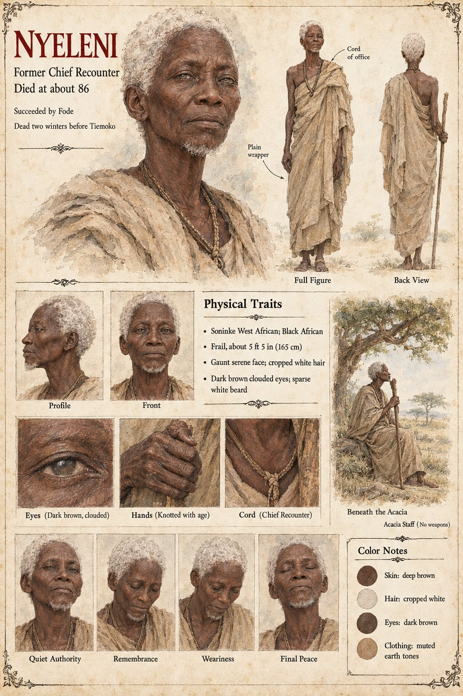

Nyeleni
Former Chief Recounter · the ancient Nyeleni · died two winters before Tiemoko · about 86 on the sheet
The manuscript names Nyeleni once, in Chapter Nine, and gives no pronoun. The dying King Tiemoko asks for Fode, who had been made Chief Recounter two winters earlier on the death of the ancient Nyeleni, and whom the king had known since Fode was a stammering novice. That is all: no age, no words, no cause of death, no account of how long the office was held, no appearance. It is enough to date the change, and the book leans on it. The Chief Recounter who stands at the mouth of the Ancestor Court for the Weighing of the two sons, and who carries sentences across the sandbar, and who pays for the dog's death out of the Kept Account's reserve, has held the office for two winters when the king dies.
The manuscript does not say whether Nyeleni was the Chief Recounter at Tiemoko's own Weighing, where Balla declares the sign. The sheet's title strip, Former Chief Recounter, Died at about 86, Succeeded by Fode and Dead two winters before Tiemoko, restates the manuscript's one clause and adds the age. Its drawing, a frail man of about 5 ft 5 in (165 cm) with a gaunt serene face, cropped white hair, sparse white beard, dark brown clouded eyes, a plain wrapper, a cord of office and an acacia staff, is the artist's, as are its panels Quiet Authority, Remembrance, Weariness and Final Peace and its scene Beneath the Acacia.
“on the death of the ancient Nyeleni”